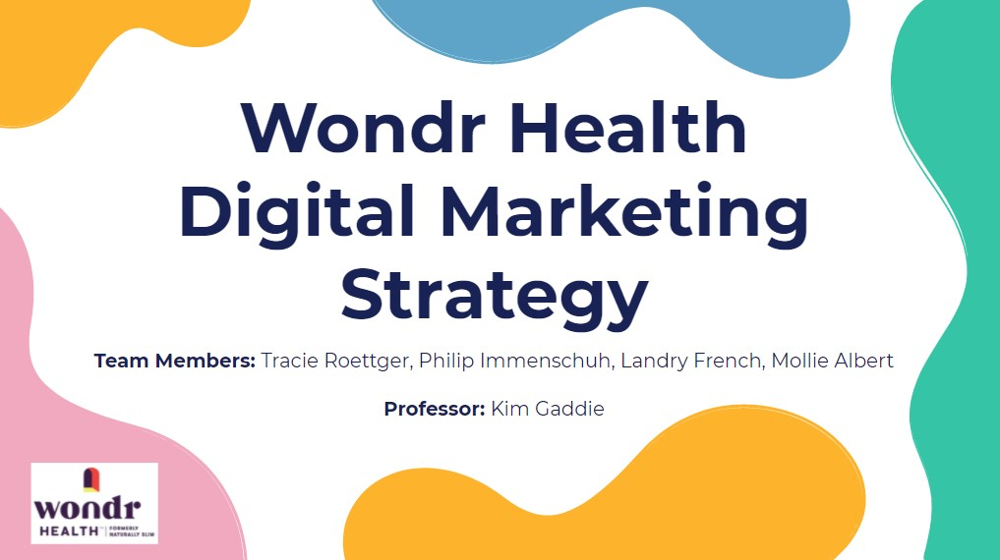
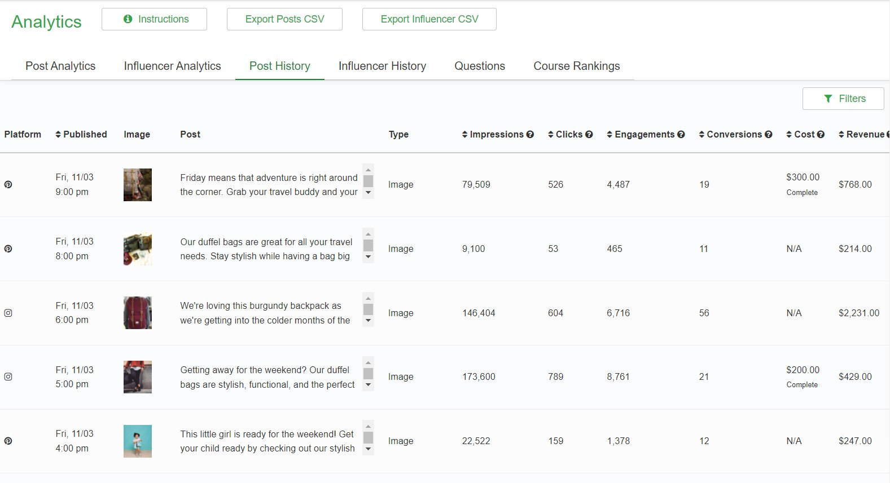

Digital Marketing Competition
-Designed a digital marketing strategy for the company Wondr Health and entered our strategy in The Digital Marketing Competition
-Our team did primary research, secondary research, and provided both owned and paid media recommendations
-Our team placed within the top 15% in the world in the competition based on our strategy
Click Here to View our Submission

Mimic Social Simulation
-Gained simulated experience with social media marketing
-Through various rounds I learned to create and schedule targeted social media ads, perform demographic targeting, measure KPIs, manage and distribute a budget, and analyze posts to make better decisions
-Posts were scheduled across multiple channels which made it important to understand optimal post times and amounts while also acknowledging the demographics of people who use the platform
Click Here to View my Certificate